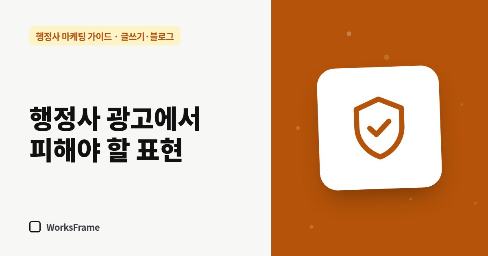

글쓰기·블로그
행정사 광고·글에서 피해야 할 표현 — 보장, 승소율, 법률상담
한 줄 답
‘100% 허가’, ‘승소율 99%’, ‘소송 대리’, 근거 없는 ‘최고·1위’는 쓰지 마세요. 실제로 하는 일을 ‘서류 작성·제출 대행·신청 대리’처럼 구체적으로 쓰는 게 안전합니다.

광고 문구는 눈에 띄고 싶어서 세지기 쉽습니다. 하지만 행정사 글에서 몇몇 표현은 고객 신뢰, 광고 규정, 업무 범위 세 가지 면에서 문제가 될 수 있습니다.
법률 자문이 아닌 실무 가이드입니다. 구체적인 판단은 대한행정사회나 법률 전문가에게 확인하세요.
1. 결과를 보장하는 표현
| 피할 표현 | 바꿔 쓸 문장 |
|---|---|
| “100% 허가”, “비자 발급 보장” | “요건과 서류를 먼저 검토해 가능성을 설명드립니다” |
| “무조건 됩니다” | “이런 경우 해당될 수 있습니다. 상담에서 확인합니다” |
| “승인율 99%” | 근거 있는 사실만, 기준과 기간을 함께 |
허가·발급은 행정기관이 결정합니다. 거짓이나 과장으로 소비자를 오인하게 하는 광고는 표시·광고의 공정화에 관한 법률이 금지합니다.
2. 근거 없는 최상급·비교
- “지역 1위”, “최고”, “유일” — 객관적 근거를 댈 수 있을 때만
- 다른 사무소를 깎아내리는 비교 — 쓰지 않기
3. 업무 범위를 넘는 표현
행정사의 업무는 행정사법이 정한 범위(행정기관에 제출하는 서류의 작성·번역·제출 대행, 인허가 신청 등의 대리, 행정 관계 법령 상담 등) 안에 있습니다. 변호사가 아닌 사람이 대가를 받고 소송이나 법률사무를 다루는 것은 변호사법이 금지합니다. 광고에서 다음 표현은 특히 조심하세요.
- “소송 대리”, “법률 대리인”
- 업무 범위를 넘어서는 것처럼 보이는 “법률상담 전문”
- 준사법 절차의 대리를 약속하는 표현 — 행정심판 관련 업무는 주의할 점을 따로 정리했습니다
실제로 하는 일을 구체적인 동사로 쓰는 것이 가장 안전합니다. “서류 작성”, “제출 대행”, “신청 대리”, “절차 안내”.
4. 확인되지 않은 경력·실적
- 처리 건수, 경력 연수는 사실 그대로
- 고객 후기는 실제 후기만, 대가를 준 후기는 그 사실을 밝히기
5. 개인정보가 드러나는 사례
사례 글의 이름, 국적, 회사명, 날짜 조합으로 사람을 알아볼 수 있다면 쓰지 않거나 동의를 받으세요. (사례 글 쓰는 법)
자주 묻는 질문
“전문”이라는 말은 써도 되나요?
주력 업무를 알리는 뜻으로 쓰는 사무소가 많지만, 공인된 자격처럼 오해하게 만들면 문제가 될 수 있습니다. “주로 하는 업무”, “집중 업무”처럼 쓰면 안전합니다.
이미 올린 글에 이런 표현이 있으면요?
지금 고치세요. 제목과 첫 문단부터 확인하면 대부분 찾을 수 있습니다.